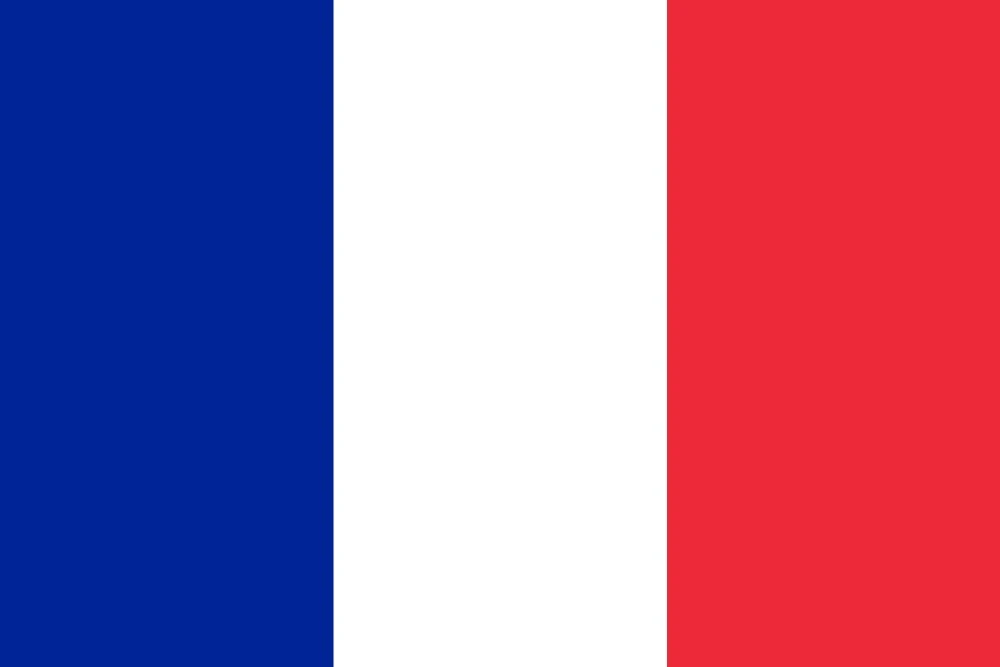

1. Zidane’s Headbutt Shocks the World
July 9, 2006, Olympiastadion Berlin—69,000 fans pack the final, France vs. Italy, 1-1, extra time, 110th minute. Zinedine Zidane, 34, in his last game, has France dreaming—his earlier penalty gave them hope. Then it happens—Italy’s Marco Materazzi mutters something (later claimed as “your sister’s a whore”). Zidane snaps—headbutts Materazzi’s chest, sending him sprawling. Ref Horacio Elizondo, via earpiece, shows red. Zidane walks off, head down—France crumble, lose 5-3 on pens.
The stadium gasps—then roars; France’s fans slump, Italy’s cheer. “I’d do it again,” Zidane says later; Materazzi shrugs, “He lost it.” Clips flood screens—Zizou’s head, Materazzi’s fall, the silent exit—Golden Ball winner ejected. “A tragedy,” coach Raymond Domenech laments; Italy’s Marcello Lippi nods, “It changed everything.” France fight—David Trezeguet hits the bar in shootout—but Fabio Grosso’s pen seals Italy’s fourth title.
It’s not a goal—it’s infamy. Zidane’s farewell turns dark—1998’s hero, 2006’s villain. “He’s human,” Pelé defends; Lippi counters, “He gave us the edge.” Fans rewatch—each frame a shockwave—X explodes with “Zidane” trending. From genius to goat in seconds, 2006’s defining image isn’t a trophy—it’s a headbutt that echoes through football history.
2. Zidane’s Panenka Opens the Final
Same game—July 9, Berlin. 7th minute—France vs. Italy, 0-0. Florent Malouda bursts into the box, Materazzi clips him—penalty. Zidane steps up, facing Gianluigi Buffon, Italy’s wall. He chips—a Panenka—ball loops, clips the bar, bounces over the line, 1-0. Coolest opener in a final—69,000 gasp, then cheer; Zidane strolls back, calm as ice. “Pure class,” Thierry Henry grins; Buffon mutters, “He dared.”
Clips flood TVs—ball’s arc, bar’s ping, net’s ripple—Zidane’s nerve shines. Italy equalize—Materazzi heads in, 1-1—but this sets the tone. “He’s a genius,” Domenech beams; Lippi nods, “That hurt us early.” Fans rewatch—each replay a masterclass—Zizou’s last dance starts with swagger. France push—Patrick Vieira, Franck Ribéry buzz—but Zidane’s chip is the spark, a moment of art before the chaos.
It’s not the win—it’s the statement. Zidane’s fifth World Cup goal, first in a final since ’98—pure audacity. “He owned that moment,” Buffon admits; Henry says, “Only Zizou.” Before the headbutt, this is 2006’s beauty—France’s hope, Italy’s warning. A Panenka that whispers genius, drowned by later madness.

3. Grosso’s Extra-Time Dagger
July 4, 2006, Westfalenstadion Dortmund—65,000 fans for Italy vs. Germany, semi-final, 0-0, 119th minute. Extra time drags—Germany press, Jens Lehmann saves from Gianluca Zambrotta. Then Andrea Pirlo picks it up—midfield maestro spins, threads Fabio Grosso on the left. Grosso cuts in, curls a left-footed screamer past Lehmann’s dive—top corner, 1-0. Seconds later, Alessandro Del Piero seals it—2-0. Italy to the final.
The crowd roars—Italy’s blue drowns Germany’s white; Grosso sprints, screaming, “I don’t believe it!” Clips explode—ball’s curve, Lehmann’s despair—Germany’s home dream dies. “He killed us,” Jürgen Klinsmann laments; Lippi beams, “Perfect timing.” Fans rewatch—each angle a dagger—Italy’s grit shines. “We fought like dogs,” Grosso says; Germany’s Michael Ballack nods, “They deserved it.”
It’s not flair—it’s clutch. Italy’s fourth final berth—post-Calciopoli scandal, they rise. “A new era,” Buffon declares; Klinsmann admits, “That goal broke us.” Grosso’s strike—first World Cup goal—turns 2006’s tide. From 0-0 to ecstasy in seconds, Italy march to Berlin—Germany’s third-place finish can’t erase this sting.

4. Klose’s Record Chase Ignites
June 20, 2006, Allianz Arena Munich—66,000 fans for Germany vs. Ecuador, group stage. 4th minute—Miroslav Klose taps in Bastian Schweinsteiger’s cross, 1-0. 44th—volleys Philipp Lahm’s cutback, 2-0. Germany win 3-0—Klose’s brace takes him to 11 World Cup goals, four shy of Ronaldo’s 15. Golden Boot race heats—five goals total, tops 2006. “I’m coming,” he grins; Ecuador’s Ulises de la Cruz shrugs, “He’s lethal.”
Clips flood screens—Klose’s poise, net’s ripple—Germany’s fans chant “Miro!” “He’s our hunter,” Klinsmann beams; Brazil’s Ronaldo nods, “A threat.” Fans rewatch—each strike a step—11 goals across 2002, 2006 (later 16 by 2014). “I live for this,” Klose says; teammate Lukas Podolski adds, “He’s unstoppable.” Germany top Group A—Klose’s fire sets the tone, third place awaits.
It’s not the title—it’s legacy. Klose’s 11th and 12th—two headers later vs. Argentina—close the gap. “He’s history,” Pelé tweets; Ecuador’s coach Luis Suárez admits, “We couldn’t stop him.” 2006’s goal machine—five in seven games—Klose’s chase is Germany’s pride. A Munich night that sparks a record run, sealed eight years later.